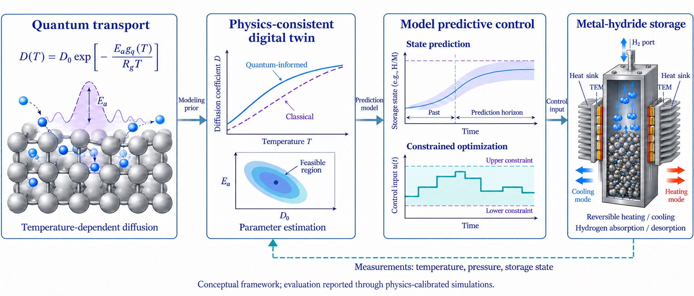

Quantum-Transport-Informed Digital-Twin MPC for Metal-Hydride Hydrogen Storage
Connecting microscopic hydrogen transport with macroscopic predictive control through a physics-consistent digital twin. Abstract | Contributions | Theory | Results | Paper and code  From quantum transport to predictive control. Temperature-dependent diffusion informs the digital twin and parameter estimation. The twin supplies the MPC prediction model; reactor measurements feed back to update the twin. Curves and reactor geometry are schematic; evaluation uses physics-calibrated simulations. A unified framework for quantum-aware hydrogen control.Classical metal-hydride (MH) hydrogen-storage systems exhibit inherently slow absorption/desorption dynamics that worsen at low temperatures ($T \lesssim 200\,\mathrm{K}$), where quantum-mechanical transport effects — hydrogen tunneling and zero-point lattice vibrations — sustain measurable diffusion that classical Arrhenius kinetics cannot predict, causing systematic actuation bias and degraded closed-loop performance. This work presents a quantum-transport-informed MPC framework with a parameter-level digital-twin estimation architecture, in which a temperature-dependent quantum correction factor $g_q(T)$, grounded in zero-point energy theory, augments the classical Arrhenius law and is propagated through a multi-fidelity hierarchy into the MPC prediction matrices, enforcing a physics-consistent parameter manifold $\Theta$ at every online weighted least-squares update. Physics-calibrated simulations on the authors' LaNi$_5$-H$_2$ platform demonstrate 70.2% settling-time reduction over classical MPC and 50.0% over the authors' prior LARC, with complete overshoot elimination at $120\,\mathrm{K}$ and a zero-overshoot safety benefit persisting across the full operating range $(298$–$333\,\mathrm{K})$.
Classical and quantum-informed transport models predict different response rates.
The study examines how this model mismatch affects predictive control. Four contributions, theoretical and numerical.Quantum-Informed Diffusion Model
Temperature-dependent correction factor $g_q(T)$, grounded in zero-point energy theory, augments the classical Arrhenius law for control-ready effective diffusion. Section II-B
Physics-Consistent Estimation Architecture
Microscopic quantum transport parameters propagate into macroscopic MPC prediction matrices via a multi-fidelity hierarchy, enforcing the manifold $\Theta$ at every update. Section III-B
Robust Estimation, Formal Guarantees
Huber-WLS regression identifies $[\mathcal{D}_0, E_a]^\top$ from noisy, sparse data. Lemma 2 proves $\mathcal{O}(N^{-1/2})$ bootstrap confidence-interval convergence. Algorithm 1 · Lemma 2
Stability & Provably Positive Advantage
Theorem 1: asymptotic stability with explicit exponential rate. Corollary 1: closed-form excess-cost bound — classical MPC's penalty is strictly positive at all finite $T$ and diverges as $T \to 0^+$. Theorem 1 · Corollary 1
Two results, anchored by physics.Theorem 1 · Closed-Loop Stability
Asymptotic stability with explicit exponential rate.
Under Assumptions (A1)–(A3), the closed-loop system satisfies recursive feasibility, monotone Lyapunov decrease, and $\hat{c}_k \to r$ with rate determined by the physical bounds of $\Theta$.
$|\hat{c}_k - r|^2 \le \dfrac{V_0^\star}{\lambda_{\min}(Q)}
\left(1 - \dfrac{\lambda_{\min}(Q)}{\lambda_{\max}(P)}\right)^k$
Corollary 1 · Performance Advantage
Closed-form lower bound on classical MPC's excess cost.
Let $\delta_k \triangleq \mathbb{B}_q(T_k) - \mathbb{B}_c(T_k)$. Then $J^{\mathrm{class}}_k - J^{\mathrm{quant}}_k \ge 0$ with strict inequality for all finite $T_k$. The relative mismatch grows without bound as $T \to 0^+$.
$\dfrac{\delta_k}{\mathbb{B}_c(T_k)}
= \exp\!\left(\dfrac{g_0}{R_g}\cdot\dfrac{e^{-T_k/\lambda}}{T_k}\right) - 1$
Simulation ResultsAt $T = 120\,\mathrm{K}$ (deep cryogenic, $D_{\mathrm{ratio}} = 4.23\times$), the quantum-informed controller produces a faster transient than the classical Arrhenius-based MPC configuration used in the comparison. Three controllers operate on the same true quantum plant: classical MPC, the authors' prior LARC (IEEE TIE 2022), and the proposed quantum-informed MPC. The zero-overshoot safety benefit holds across the full operating range $(120$–$333\,\mathrm{K})$, not only the cryogenic regime. The advantage stems from the physics-consistent diffusion model, not from the MPC architecture alone — confirmed directly by Experiment 7 (Corollary 1 validation).
Closed-loop @ T ≈ 120 K
Settling time, classical MPC
5.7 s
Settling time, LARC [22]
3.4 s
Settling time, quantum (ours)
1.7 s
Overshoot reduction
100%
$t_s$ improvement vs. classical
70.2%
Eight experiments, mapped to theory.EXP · 01
Baseline WLS
Lemma 2
EXP · 02
Outlier Robustness
Huber–WLS
EXP · 03
Data Sparsity
$\mathcal{O}(N^{-1/2})$ CI
EXP · 04
Quantum Diffusion
Lemma 1
EXP · 05
Model Fidelity
Multi-fidelity DT
EXP · 06
Closed-Loop Sweep
Theorem 1
EXP · 07
Cost Gap
Corollary 1
EXP · 08
Time-Varying T
Online robustness
A decade on the same LaNi$_5$ platform.This work is the third in a series advancing control methodology for the authors' LaNi$_5$-H$_2$ experimental platform. The hardware-in-the-loop campaign currently in preparation will deploy the proposed framework on the same hardware that already validated our prior controllers. 2013 / 2014
Fuzzy adaptive PID control
MH reactor coupled with thermoelectric module
(J. Bionic Eng.; IEEE/ASME AIM).
2022
LARC — Learning-based Adaptive Robust Control
Sliding-mode adaptation on the same platform
(IEEE Trans. Industrial Electronics).
2026 · This work
Quantum-Transport-Informed Digital-Twin MPC
Physics-grounded multiscale framework with formal stability and
performance guarantees (submitted IEEE TCST).
Next
Hardware-in-the-loop deployment
INS / DFT identification of $g_0, \lambda$ for LaNi$_5$;
transient performance validation against simulation.
Read, cite, reproduce.PreprintThe supplied page describes a preprint on Preprints.org; a direct URL has not yet been provided. Code
Implementation in Julia 1.12 with OSQP and JuMP.jl. Repository release accompanies the camera-ready paper. Julia · OSQP · JuMP
|